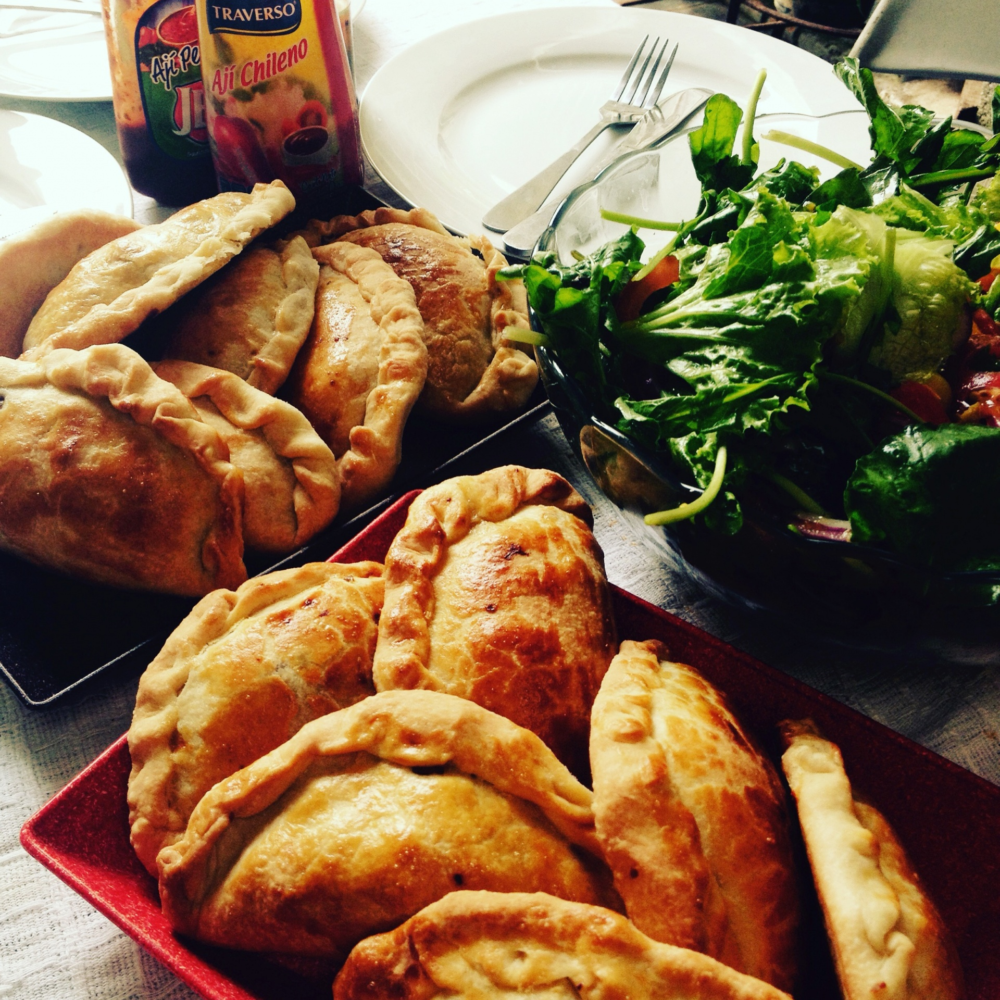

Empanadas

Description
This is a recipe for making empanadas the way my mother taught me.
There are a million different ways to make these. Also, I never measure anything, so keep that in mind when I give measurements.
Ingredients
- 1 package of ground beef (80-20) is fine
- 1 can of tomato sauce
- Onion
- Garlic
- Culantro (also known as ngo gai (Vietnamese) or Pak Chee Farang (Thai))
- Adobo
- Sazon
- Bell Pepper (Red and Green)
- Discos
- Vegetable Oil for frying (I use Canola)
Steps
- Put the onion, peppers, garlic and culantro in a blender/food processor until you get sofrito. Put any extra in the freezer.
- Heat some oil in a pan and then saute the sofrito.
- Once it's a nice, deep green color, add your ground beef. Add the adobo and sazon. Brown it.
- Once it's browned, add the tomato sauce. Shouldn't add so much so that it's soupy, but you want a kinda sloppy joe consistency.
- Once the picadillo's done, make sure your discos are unthawed.
- Add some frying oil to a pan; heat it up.
- Add some picadillo to the center of the disco. Fold it and crimp with a fork.
- Fry the discos.